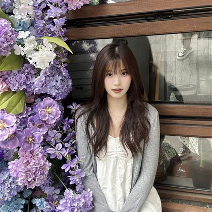
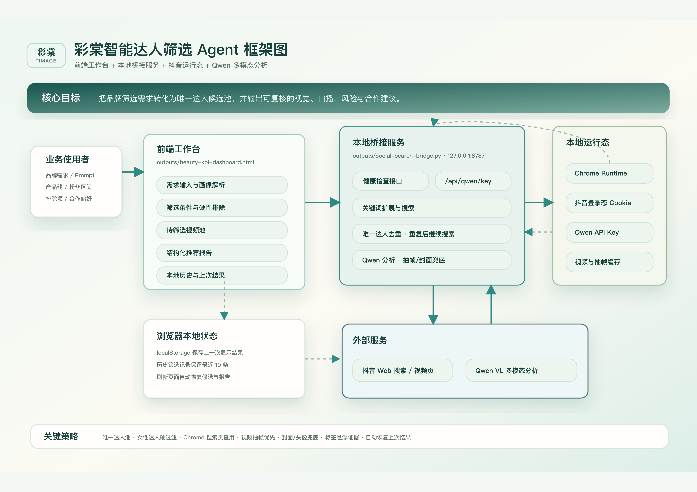
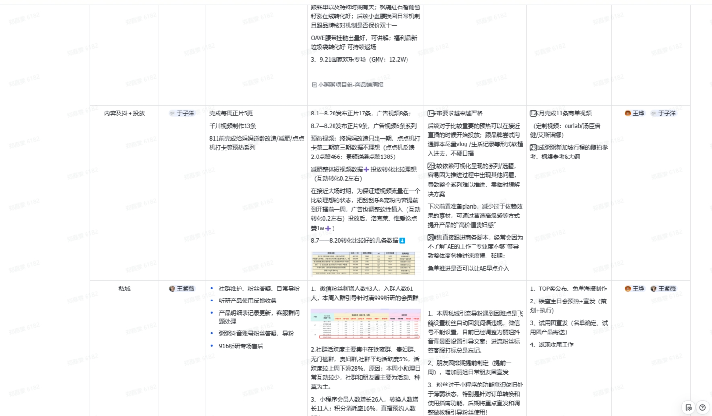
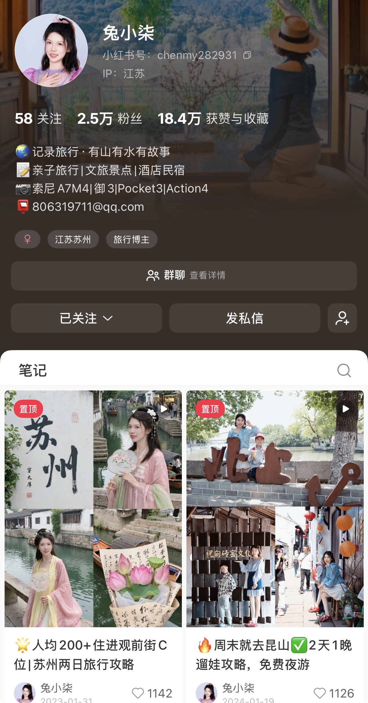
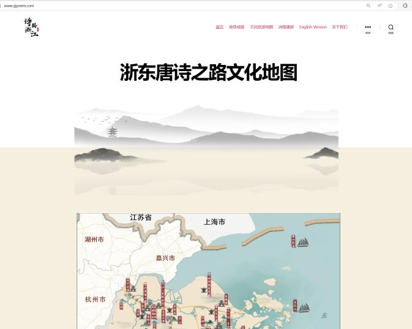
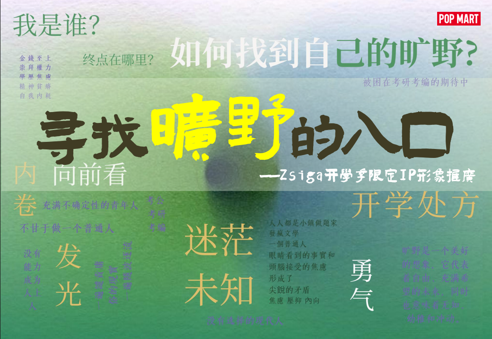

<!DOCTYPE html><html lang="zh-CN"><head><title>郑嘉雯 | 数字媒体与智能传播作品集</title><meta charset="utf-8"><meta name="viewport" content="width=device-width,initial-scale=1,maximum-scale=2"><meta http-equiv="X-UA-Compatible" content="IE=edge,chrome=1"><meta name="renderer" content="webkit"><meta name="theme-color" content="#222325"><meta name="apple-mobile-web-app-status-bar-style" content="#222325"><meta name="msapplication-navbutton-color" content="#222325"><link rel="stylesheet" href="https://cdn.jsdelivr.net/gh/SimonAKing/font/font.min.css"><link rel="stylesheet" href="css/style.css"><meta http-equiv="x-dns-prefetch-control" content="on"><link rel="dns-prefetch" href="https://cdn.jsdelivr.net"><link rel="prefetch" href="https://cdn.jsdelivr.net/"><meta name="description" content="郑嘉雯的个人主页，展示 AI 内容运营、品牌传播、数字文旅、新媒体运营与项目实践。"><link rel="icon" href="favicon.ico" type="image/x-icon"><link rel="shortcut icon" href="favicon.ico" type="image/x-icon"><!--[if lt IE 9]><style>.alert { padding: 15px; margin-bottom: 20px; border: 1px solid transparent; border-radius: 4px } .alert-danger { background-color: #f2dede; border-color: #ebccd1; color: #a94442; border-bottom: 1px solid #ebccd1 } .alert-link { color: #843534; font-weight: bold } .topframe { margin: 0; padding-left: 15px; padding-right: 15px; text-align: center; border-radius: 0; position: fixed; left: 0; right: 0; top: 0; z-index: 1000 }
</style><div class="alert alert-danger topframe">你的浏览器实在<strong>太太太太太太旧了</strong>，放学别走，升级完浏览器再说<a class="alert-link" target="_blank" href="http://browsehappy.com">立即升级</a></div><script src="https://cdn.bootcss.com/html5shiv/r29/html5.min.js"></script><script src="https://cdn.bootcss.com/respond.js/1.4.2/respond.min.js"></script><![endif]--></head></html><body><main><div class="content content-intro"><div class="content-inner"><canvas id="background"></canvas><div class="wrap fade"><h2 class="content-title">郑嘉雯</h2><h3 class="content-subtitle" original-content="AI 内容运营 · 品牌传播 · 数字文旅">&nbsp;</h3><a class="enter">进入主页</a><div class="arrow arrow-1"></div><div class="arrow arrow-2"></div></div></div><div class="shape-wrap"><svg class="shape" width="100%" height="100vh" preserveAspectRatio="none" viewBox="0 0 1440 800" xmlns:pathdata="http://www.codrops.com/"><path d="M -44,-50 C -52.71,28.52 15.86,8.186 184,14.69 383.3,22.39 462.5,12.58 638,14 835.5,15.6 987,6.4 1194,13.86 1661,30.68 1652,-36.74 1582,-140.1 1512,-243.5 15.88,-589.5 -44,-50 Z" pathdata:id="M -44,-50 C -137.1,117.4 67.86,445.5 236,452 435.3,459.7 500.5,242.6 676,244 873.5,245.6 957,522.4 1154,594 1593,753.7 1793,226.3 1582,-126 1371,-478.3 219.8,-524.2 -44,-50 Z"></path></svg></div></div><div class="content content-main"><div class="portfolio-page"><section class="hero-card" id="card"><div class="card-inner fade"><header><h1 data-translate="name">郑嘉雯</h1><h2 id="signature" original-content="数字媒体与智能传播硕士 / AI 赋能内容运营" data-translate="signature">数字媒体与智能传播硕士 / AI 赋能内容运营</h2><ul class="profile-meta"><li>浙江传媒学院</li><li>数字媒体与智能传播硕士</li><li>浙江杭州</li><li>中共党员</li><li>本科广告学</li></ul><p class="hero-summary">关注 AI Agent、内容运营、品牌传播与数字文旅的结合，具备美妆达人投放、私域运营、新媒体账号孵化、多模态影像策划与数据分析经验。</p></header><ul class="quick-links"><li><a href="#work" aria-label="工作项目"><i class="icon icon-bokeyuan"></i><span data-translate="工作项目">工作项目</span></a></li><li><a href="#skills" aria-label="相关技能"><i class="icon icon-xiaolian"></i><span data-translate="相关技能">相关技能</span></a></li><li><a href="mailto:2459871356@qq.com" aria-label="邮箱"><i class="icon icon-email"></i><span data-translate="邮箱">邮箱</span></a></li><li><a href="https://aden9460.github.io/zjxwh/" aria-label="主页" target="_blank"><i class="icon icon-github"></i><span data-translate="主页">主页</span></a></li></ul></div></section><section class="section about-section" id="about"><div class="section-heading"><span>About</span><h2>自我介绍</h2></div><p>我擅长把用户洞察、平台数据和内容创意转化为可执行的传播策略，也在尝试用 Qwen、Codex、Claude、Midjourney 等 Agent 工具提升内容生产、达人筛选和投放决策效率。</p><div class="ability-grid"><div class="ability-card"><h3>内容运营与品牌传播</h3><p>能将新品卖点、平台机制和用户兴趣转化为达人 Brief、脚本方向和内容种草策略，熟悉抖音、小红书等平台的内容表达方式。</p></div><div class="ability-card"><h3>数据复盘与投放判断</h3><p>关注 CTR、CPM、CPE、ROI 等投放指标，能结合达人画像、报价和互动表现进行合作适配度判断与复盘。</p></div><div class="ability-card"><h3>AI Agent 与数字内容</h3><p>使用 Qwen、Qwen3-VL、Codex、Claude、Midjourney 等工具辅助达人筛选、内容生产、多模态分析和项目展示搭建。</p></div></div><div class="metrics"><div class="metric"><strong>3.8</strong><span>研究生平均绩点</span></div><div class="metric"><strong>Top 10%</strong><span>本硕成绩排名</span></div><div class="metric"><strong>50+</strong><span>达人合作促成</span></div><div class="metric"><strong>30w</strong><span>小红书内容浏览</span></div></div></section><section class="section" id="work"><div class="section-heading"><span>Work Experience</span><h2>工作经验与项目实践</h2></div><div class="project-grid"><article class="project-card"><a class="project-cover" href="assets/projects/detail.html?project=proya"></a><div class="project-body"><em>抖音内容运营 · 2025.12 - 2026.05</em><h3>珀莱雅 / 彩棠 Beauty KOL Intelligence Agent</h3><p>围绕底妆新品推广，参与从卖点拆解、达人匹配、脚本审核、素材测试到投放复盘的内容运营链路，并将高频达人筛选流程沉淀为 Agent 原型。</p><ul><li>参与修颜乳、青衣气垫、粉底液等新品上市推广。</li><li>将产品卖点转化为千川信息流语言与达人沟通 Brief。</li><li>每周输出 20+ 达人推荐清单，累计促成 50+ 达人合作。</li></ul><div class="links"><a href="assets/projects/detail.html?project=proya">查看完整项目</a></div></div></article><article class="project-card"><a class="project-cover text-cover" href="assets/projects/detail.html?project=wuchan"><span>媒介投放</span><strong>数据分析 / 达人建联 / 商务谈判</strong></a><div class="project-body"><em>媒介 · 2025.02 - 2025.05</em><h3>物产中大云商公司</h3><p>参与达人筛选、建联、询价和商务谈判，结合粉丝量级、报价、CPM/CPE 等指标评估合作适配度。</p><ul><li>通过 SQL 提取并分析达人投放数据。</li><li>输出合作效果分析报告，支持投放策略优化。</li><li>维护达人合作数据库，跟进结算对账和合同流程。</li></ul><div class="links"><a href="assets/projects/detail.html?project=wuchan">查看完整项目</a></div></div></article><article class="project-card"><a class="project-cover" href="assets/projects/detail.html?project=kuai"></a><div class="project-body"><em>私域运营 · 2024.07 - 2024.10</em><h3>快美妆科技有限公司</h3><p>负责达人全链路私域运营，覆盖商务对接、用户维护、直播跟播、社群活动和导粉。</p><ul><li>参与达人选品与合作沟通，推进合作落地。</li><li>维护达人私域社群，提升用户活跃和转化。</li><li>负责日播跟播与粉丝需求登记。</li></ul><div class="links"><a href="assets/projects/detail.html?project=kuai">查看完整项目</a></div></div></article><article class="project-card"><a class="project-cover" href="assets/projects/detail.html?project=suzhou"></a><div class="project-body"><em>新媒体运营 · 2022.12 - 2023.06</em><h3>苏州新晨传媒公司</h3><p>独立负责小红书账号从 0 到 1 孵化，定位亲子旅行与文旅方向，完成选题、拍摄剪辑、发布和复盘。</p><ul><li>发布 30+ 篇旅行攻略类视频内容。</li><li>2 个月涨粉 3000，累计浏览量达 30 万。</li><li>根据数据反馈持续调整内容策略。</li></ul><div class="links"><a href="assets/projects/detail.html?project=suzhou">查看完整项目</a></div></div></article><article class="project-card"><a class="project-cover" href="assets/projects/detail.html?project=digital"></a><div class="project-body"><em>数字文旅项目 · 2024.03 - 2025.12</em><h3>多模态数字影像 / 诗路文化带资源平台</h3><p>参与多模态数字影像、诗路文化带资源平台、数字人影像生成方法等项目，将文化研究内容转化为影像脚本、平台数据和可视化展示。</p><ul><li>设计数字影像脚本，参与数字人视觉效果优化与测试。</li><li>撰写并发布项目进展推文 3 篇，相关成果获浙江省科学技术进步奖提名。</li><li>整理文化遗产库和旅游产品库，为平台提供结构化数据。</li></ul><div class="links"><a href="assets/projects/detail.html?project=digital">查看完整项目</a></div></div></article><article class="project-card"><a class="project-cover" href="assets/projects/detail.html?project=popmart"></a><div class="project-body"><em>广告策划作品</em><h3>泡泡玛特策划案</h3><p>围绕品牌传播和消费者洞察完成策划案，呈现从策略分析、创意表达，到传播执行的完整广告策划思路。</p><div class="links"><a href="assets/projects/detail.html?project=popmart">查看完整项目</a></div></div></article></div></section><section class="section campus-section"><div class="section-heading"><span>Campus</span><h2>在校经历</h2></div><div class="timeline"><div class="item"><span>2023.10 - 2026.06</span><h3>浙江传媒学院 · 数字媒体与智能传播 硕士</h3><p>研究生平均绩点 3.8，排名位于专业前 10%；研究方向关注数字内容生产、智能传播、数字文旅与多模态影像。</p></div><div class="item"><span>2023.10 - 2026.06</span><h3>班级心理委员</h3><p>策划心理健康周、心理健康月等活动，负责宣传文案、心理健康资源整理、讲座咨询组织与同学沟通。</p></div><div class="item"><span>2020.09 - 2022.05</span><h3>社团理事会部长</h3><p>负责社团活动策划、宣传运营、数据分析和团队管理，推动多部门协作完成校园活动，并根据平台数据调整宣传节奏。</p></div><div class="item"><span>2019.10 - 2020.06</span><h3>社会实践社团干事</h3><p>参与志愿活动招募、公众号推文撰写、活动预算控制、物料准备和现场执行，积累活动统筹与平台运营经验。</p></div></div></section><section class="section" id="skills"><div class="section-heading"><span>Skills</span><h2>相关技能</h2></div><div class="skill-grid"><div class="skill-group"><h3>内容与运营</h3><p>新品卖点拆解、达人 Brief、脚本策划、KOL/KOC 筛选、账号孵化、社群运营和粉丝互动。</p></div><div class="skill-group"><h3>数据分析</h3><p>SQL、Python 基础、达人资源台账、CTR / CPM / CPE / ROI、投放复盘和合作效果分析。</p></div><div class="skill-group"><h3>AI 与 Agent</h3><p>Qwen、Qwen3-VL、Codex、Claude、Midjourney，用于达人筛选、内容生产、多模态分析和网页搭建。</p></div><div class="skill-group"><h3>设计与影像</h3><p>PS、AE、PR、无人机拍摄、短视频剪辑、信息流视频编剪和宣传物料设计。</p></div><div class="skill-group"><h3>数字人与网页</h3><p>iClone、Character Creator、Dreamweaver、基础网页结构搭建、数字文旅平台内容整理与页面维护。</p></div></div></section><section class="section result-section"><div class="section-heading"><span>Honors & Publications</span><h2>荣誉证书与期刊</h2></div><div class="result-grid"><div class="result-card"><h3>荣誉证书</h3><p>普通话二级甲等、大学英语六级、演出经纪人证书、全国大学生广告艺术大赛策划案三等奖、研究生绩点专业前 10%、本科绩点专业前 10%、中共党员</p></div><div class="result-card"><h3>期刊成果</h3><ul><li>微短剧的共情叙事与文化认同实践——以《逃出大英博物馆》为例；第一作者；《数字出版研究》</li><li>基于社交媒体的网民情感与群体认同分析——以“TI12”AR止步四强为例；第二作者；《数字出版研究》</li><li>文化遗产数字化及数字文旅可视化服务技术研究；第三作者；《中国图象图形学报》</li></ul></div></div></section><footer class="footer"><span>浙江杭州</span><a href="mailto:2459871356@qq.com">2459871356@qq.com</a><a href="tel:15158006182">15158006182</a></footer></div><canvas class="grid-background" id="gridCanvas"></canvas></div><script src="https://cdn.jsdelivr.net/npm/animejs@3.2.1/lib/anime.min.js"></script><script>window.$ = selector => document.querySelector(selector)
const getOriginalContent = selector => $(selector).getAttribute("original-content")
window.subtitle = getOriginalContent(".content-subtitle")
window.signature = getOriginalContent("#signature")
window.config = {
	SIM_RESOLUTION: 128,
	DYE_RESOLUTION: 1024,
	CAPTURE_RESOLUTION: 512,
	DENSITY_DISSIPATION: 1,
	VELOCITY_DISSIPATION: 0.2,
	PRESSURE: 0.8,
	PRESSURE_ITERATIONS: 20,
	CURL: 30,
	SPLAT_RADIUS: 0.25,
	SPLAT_FORCE: 6000,
	SHADING: true,
	COLORFUL: true,
	COLOR_UPDATE_SPEED: 10,
	PAUSED: false,
	BACK_COLOR: { r: 30, g: 31, b: 33 },
	TRANSPARENT: false,
	BLOOM: true,
	BLOOM_ITERATIONS: 8,
	BLOOM_RESOLUTION: 256,
	BLOOM_INTENSITY: 0.4,
	BLOOM_THRESHOLD: 0.8,
	BLOOM_SOFT_KNEE: 0.7,
	SUNRAYS: true,
	SUNRAYS_RESOLUTION: 196,
	SUNRAYS_WEIGHT: 1.0,
}
</script><script src="js/main.js"></script><script src="js/background.js"></script></main></body>